Sage X3 Services installation
Overview
This document provides information on how to set up and check the server environment for Sage X3 Services. There are two main steps:
- Install Sage X3 Services
- Configure the database connection in the Syracuse server
You need to install Sage X3 Services to use Mobile Automation (ADC) for distribution.
Important: Use a PowerShell prompt with administrator privilege for all the commands below.
Prerequisites
The Sage X3 Services component requires at least Sage X3 2021 R2 (V12) installation using a Microsoft® SQL Server or an Oracle database.
You must install it on a Windows Server 2016, 2019, or 2022 operating system.
The Sage X3 Services component is not available on Linux.
'hostname':'port' combinations used by client devices to reach the application must also be reachable by the X3 Services server and correctly defined in Syracuse.
You need to have one of the following badges associated with your user:
- ADCDIS for distribution
- ADCMAN for manufacturing
- ADCALL for both distribution and manufacturing
Install Sage X3 Services
Follow these steps to install Sage X3 Services:
- Unzip x3-services-M.m.P.b-win.zip in the target folder (example: D:\SageX3\x3-services).
- In that folder, edit the xtrem-security.yml file and change the
clientIdandsecretwith your own values.
Note: Thesecretmust have at least 20 characters. Go to the lastpass or passwordsgenerator websites to generate a strong secret. - Set the
loginUrlwith the public URL of your server.loginUrl: https://public-syracuse-server.example.com syracuse: clientId: create-your-own-client-id-uuid secret: change-to-use-a-strong-secret-for-your-client-id
Note: Respect the rules regarding special characters like backslashes in YML files. You can learn more on this topic on the yaml.org website. - In the Syracuse server installation folder, edit the nodelocal.js file to add or edit the etna section without the
[...]markers.exports.config = { [...] etna: { security: { clientId: "create-your-own-client-id-uuid", secret: "change-to-use-a-strong-secret-for-your-client-id" } } [...] }; - Make sure you have the
bearerauthentication mode enabled in in the list of authorizedauthmethods in the nodelocal.js file.exports.config = { [...] session: { auth: ["oauth2", "bearer"], } [...] }; - Open a PowerShell prompt with administrator privilege and uninstall any running Sage X3 Services.
PS D:\SageX3\x3-services> .\uninstall.ps1
- Enter the following command from the target folder.
PS D:\SageX3\x3-services> .\install.ps1 Install complete. Start complete. PS D:\SageX3\x3-services>
This command creates a Sage X3 Services Windows service. Make sure that theInstall completeandStart completemessages return. - Verify that the server is up and running. Run
invoke-webrequest http://localhost:8240/pingand make sure thatStatusCode : 200is returned.PS D:\SageX3\x3-services> invoke-webrequest http://localhost:8240/ping StatusCode : 200 StatusDescription : OK Content : {} RawContent : HTTP/1.1 200 OK Vary: Accept-Encoding Connection: keep-alive Keep-Alive: timeout=5 Content-Length: 2 Content-Type: application/json; charset=utf-8 Date: Wed, 04 Nov 2020 17:01:56 GMT ETag: W/"2... Forms : {} Headers : {[Vary, Accept-Encoding], [Connection, keep-alive], [Keep-Alive, timeout=5], [Content-Length, 2]...} Images : {} InputFields : {} Links : {} ParsedHtml : mshtml.HTMLDocumentClass RawContentLength : 2
Change the Sage X3 Services listening port
This step is not mandatory.
By default, port 8240 is used. You can change this by editing the xtrem-config.yml file to add the port parameter with another value. Then restart the service.
Example
port: 8765
storage:
managedExternal: true
Configure the X3 solution
You need to configure the X3 solution in the Syracuse administration pages for the Sage X3 Services connection to work with your Sage X3 application.
Depending on the Sage X3 application database type, you need to configure an SQL Server service or an Oracle service.
Configure an MS SQL Server service
Go to All > Administration > Administration > Endpoints > SQL Server service and edit the following fields:
| Field | Description | Example |
|---|---|---|
| Description | Description of your service that identifies it uniquely | SEED MSSQL service |
| Instance name | Database server host name or IP followed by the instance name if any | localhost localhost\myInstance |
| Database name | Name of the database used by the endpoint | sagex3 |
| User | Name of the user to connect to the folder | SEED |
| Password | Password for the database folder | Str0ng-seed-pwd |
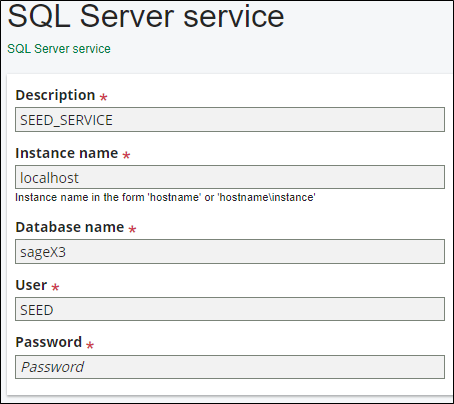
Configure an Oracle service
Go to All > Administration > Administration > Endpoints > Oracle service and edit the following fields:
| Field | Description | Example |
|---|---|---|
| Description | Description of your service that identifies it uniquely | SEED Oracle service |
| Host | Database server host name or IP | localhost |
| Port | Database server port | 1521 |
| SID | Oracle SID | SAGEX3 |
| User | Name of the user to connect to the folder | SEED |
| Password | Password for the database folder | Str0ng-seed-pwd |
Update the X3 solution instance
Once you have created the appropriate SQL server or Oracle service, edit the X3 solution to fill in the following fields:
| Field | Description | Example |
|---|---|---|
| Sage X3 Services URL | URL of the Sage X3 Services installed in the previous steps | http://localhost:8240 |
| SQL service | Select the SQL server or Oracle service created in the previous step | SEED mssql service |
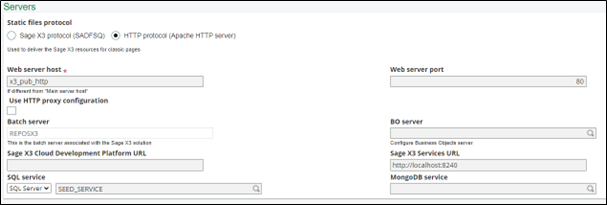
Note: If the Sage X3 Services URL is not displayed, select the Default authoring.
Configure the SOAP pool
You need to configure and start a SOAP pool for the X3 endpoint that will be used by Sage X3 Services integration. For further information, consult the Classic SOAP pools configuration documentation.
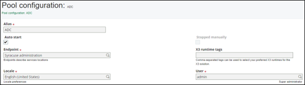
Note: If you have multiple SOAP pools for a given endpoint, the first one is used.
Navigate to the handheld application
Important: Restart the Syracuse agent service to reload the nodelocal.js configuration.
Open the handheld page: https://loginUrl/handheld/
Example: https://syracuseserver:8124/handheld/
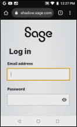
Resize the handheld application on a PC
Note: This section is relevant only if you open the handheld application on a PC.
You need to size the screen correctly to replicate a width between 3.5 and 6 inches.
- In your Chrome browser, go to Customize and control Google Chrome > Install Sage X3.
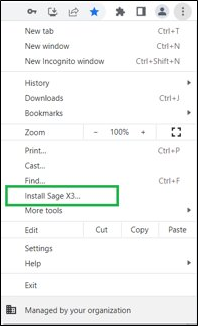 - A confirmation window pops up. Click Install.
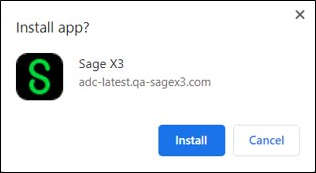 - The following screen displays.
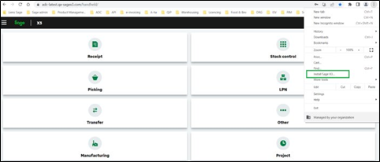 - You can resize the window manually to a size similar to the one of a portable device.
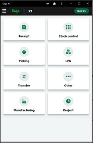 - A shortcut has been created on your desktop.
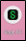
Chrome is the recommended browser for Sage X3 Services because the web view embedded in the web application uses Chrome for scanning and the camera.
Chrome is the only browser that works well if you use a scanner. You can use other browsers such as Edge for demo purposes as long as you do not use the scanner since it is not supported outside of Chrome (Settings and more > Applications > Install the site).
Portable devices configuration
Note: Sage does not provide the devices.
The required operating system is Android version ≥ 8.0.
Screen size:
- Handheld scanners: 3 to 4 inches
- Rugged mobiles embedding a scanner: 4 to 6.4 inches
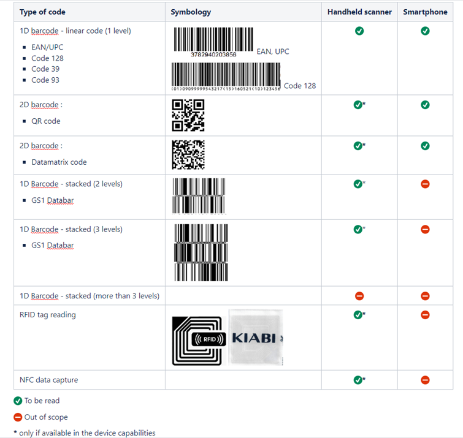
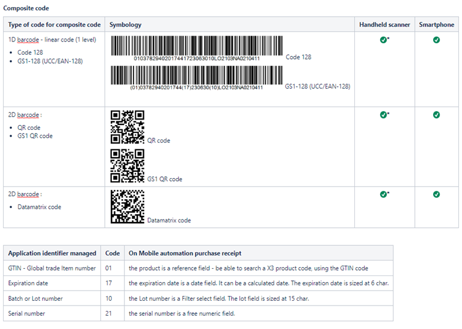
Handheld scanners: Select or scan the URL on first use and add it to the Home screen to easily access the web application login page the next time. Transactions have been tested using:
- Honeywell CK65-LON-BSC210E
- Zebra MC339R-GF2HG4EU
- Zebra MC330K- GE2HG4RW
- Zebra MC930B-GSEEG4NA
- Zebra MC930P-GSCDG4RW
For more information, consult the Zebra support documentation.
MC33 limitation: On the physical keyboard, it is possible to select the first letter but not the second and the third. To manage that, you need to scan or use the virtual keyboard.
Add the application to your portable device's home screen
- In your Chrome browser, open the handheld page: https://loginUrl/handheld/
Example: https://syracuseserver:8124/handheld/ - Log into the application:
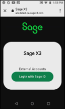 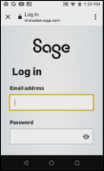 - Next to the URL, tap the ellipses (Customize and control Google Chrome).
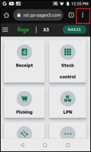 - Select Add to home screen:
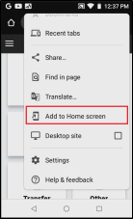 - Tap Add to confirm:
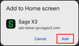 - The icon displays on your device’s home screen:
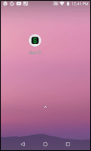 - You can now tap the icon to log into Mobile Automation directly from your device’s home screen:
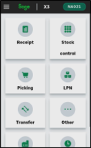
Smartphones
Note: Sage does not provide the devices.
Since release 2023 R1/V12.0.33, you can use Mobile Automation on smartphones, respecting the portable devices configuration described above.
Transactions have been tested using:
- Nexus 5X, Androïd v8.1
- Samsung Galaxy A51 – SM-A515F, Androïd v13
- Samsung Galaxy A6 – SM-A600FN, Androïd v8
- Samsung Galaxy A40 – SM-A405FN, Androïd v11
Add the application to your smartphone's home screen
Note: The default mobile app language is the language you have selected in Sage X3 desktop. Before installing the APK file, make sure you have selected the right language on Sage X3 desktop as you cannot change it when the APK file installation is complete.
- Get the APK file:
The component is available at the same time as the release package from the local knowledge base, at the usual place where you retrieve the components of a release. - Install the APK file:
- Got to Settings, then Security
- Enable unknown sources
- Search for the APK on your phone (using a file explorer for example)
- Launch the APK file and follow the instructions
- (Optional, but recommended) Disable unknown sources
- Configure the first server:
For the first connection, once you accept the Terms and conditions, you can configure the server URL you will use.
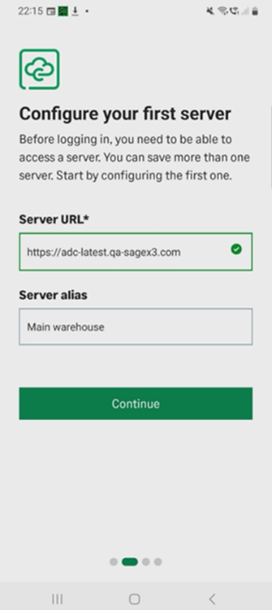 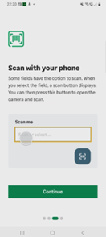 - Give access to the camera, select the "server" and get started:
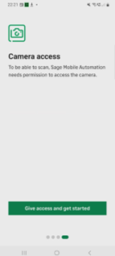 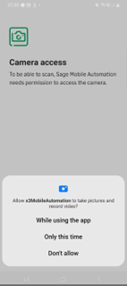 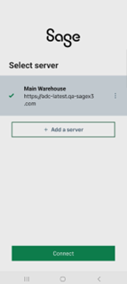 - The icon displays on your smartphone’s home screen.
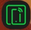 - You can now tap the icon to log into Mobile Automation directly from your smartphone’s home screen.
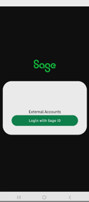 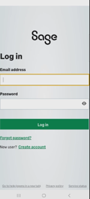 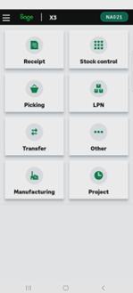
Note: When you use the application on your smartphone for V12, do not select Remember me on this computer. - Here is an example of the way the scan button appears. When you select the field, it appears on the top right of the screen; you can tap on it and scan.
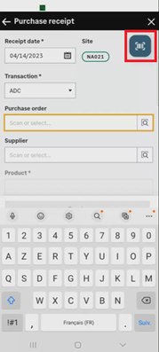 - To log out of Mobile Automation:
- Log out from your account
- Swipe up the page from multiple page display to reset your app history and empty your cache.
Update a previously installed version
Follow these steps to update the Sage X3 Services component:
- Save a backup of your previous version.
- Open a PowerShell prompt with administrator privilege.
- Enter the following command from the target folder:
PS D:\SageX3\x3-services> .\uninstall.ps1 Uninstall complete.
- Follow the installation procedure.